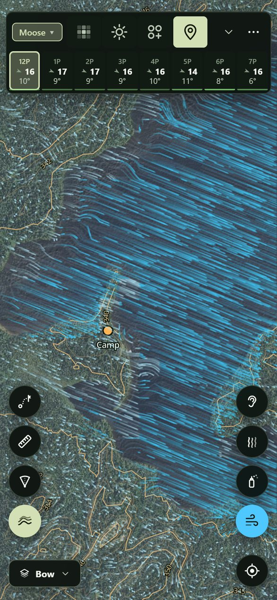

Open the beta link. On an iPhone use Safari, then Share → Add to Home Screen. On Android, Chrome's Install app.
Save your area for the bush: ⋯ → Settings → Maps on this phone → Download. The app reloads when it's done.
Tap Moose ▾ at the top left to pick what you're hunting. Everything that scores follows it.
Go deeper
What's in it › lists every layer on the phone with its source, date and licence, and how much storage it takes.
When new maps are ready, Settings says 2 new maps. One tap brings them in.
Grouse, bear and deer score too. Pick Walleye, Pike or Lake trout and the app turns into a fishing map, with its own buttons and lake views.
Put your initials in Settings so your wind checks carry your name.
02 The screen
Everything is on one screen.
Moose ▾What you're hunting.
Heat mapThe best ground for the hour you're looking at.
The stripThe forecast hour by hour. Tap an hour to plan for it.
⋯Hunt log, pins, go to coordinates, views, the field guide, settings.
Under your thumbHeard, Scent, Sharpen, Wind.
My locationOff, follow, heading-up. On, it keeps your track.
The other sideRoutes, Measure, Lanes, Contours.
The view pillBow, Bush, Topo, Terrain, Scout and your own.
Hold any button and a drawer opens with the things it does less often.

12345678
02 The screen · hold for more
Tap a button to use it, and hold it for its drawer.
Button
Tap
Hold
Wind
The wind flow on or off
Ground or forecast wind, turbulence, strength, line thickness, leaves on or down
Scent
Your cone, following you
Cone size, strength, height (ground, 4 m, 6 m), cloud or particles
Sharpen
A wind check where you stand
Undo the last check, the checks in the hunt log
Heard
Then tap where the call came from
A blank sit here, undo the last sound, the hunt log
Routes
The route card
Easiest or hunt, stay dry, from you or camp, clear
Measure
A tape from you
From you or from a tap, your pace
Contours
LiDAR contours on or off
Lines every 1, 2, 5 or 10 m
Lanes, Bush
The layer on or off
Its strength
Heat map
On or off
Colour by the day's best or a fixed scale, strength
Marks
Hide or show everything you've marked
Pins, places, tracks, game, wind checks, each on or off
An hour
Plan for it; tap again for its detail
Plan for it and open the detail at once
03 Plan
Find the morning worth hunting.
Tap the heat button on the strip. The brightest ground is the best for the hour you're looking at, and the top six spots are numbered.
Open the strip with ⌄. Each day and hour has a green bar for how active moose should be.
Tap a day or an hour to plan for it. The heat, the wind, your scent and the routes all move to that time. Now brings you back.
Go deeper
Tap the picked hour again for its detail: gusts and feels-like, the ground air (Ground air till 8:10 · scent sinks downhill), sunrise and sunset, legal light, the moon, and where the forecast came from (HRDPS 2.5 km · 12 min ago · next HD ~3:40).
A blue line under the hours marks when cold air is draining downhill and taking your scent with it.
Hold the heat button to colour it by the day's best or on a fixed scale, and to set its strength.
Switch Moose ▾ to Deer, Grouse or Bear and the heat redraws for that animal: browse and cover for moose, aspen and alder for grouse, berry cuts for bear.
The scores weigh the last ten days of weather. A warm spell beds moose, and the first cool day after one moves them. The rut follows the calendar, and the hardwoods' leaves come down by date.
04 HD by text
No bars? Doesn't matter. The HD forecast comes by text.
Tap ⋯, then Weather by satellite. The app writes the line for your camp, like GW1 49.200 -84.800 48.
From an iPhone on satellite, tap Text it, then Send. From an inReach, tap Copy, start a message to +1 867 988 4457 in Garmin Messenger, paste and send.
When the answer comes, copy the whole reply, open the sheet again and tap Paste. It says Weather updated, and how the wind at dusk changed.
Go deeper
The answer takes a few minutes. The sheet remembers you asked, so the phone can go back in your pocket. On an inReach, check for messages; with Apple's satellite, stay connected for it.
The reply's first words are for reading on the inReach's screen: the wind now, its next big change and the first rain. The rest is the next two days of HRDPS, packed for the app.
The pasted hours go everywhere a download would: the ground wind, your scent cone, the heat map. The hour detail says by satellite for them, and the first time you have signal again the full forecast comes in as usual.
On an inReach it's two messages on your plan, one out and one back. Save the line as a preset and asking is two presses on the inReach.
From an iPhone, it needs a carrier that sends ordinary texts by satellite, not only iMessages.
05 Dig in
Look hard at one spot.
Tap the map anywhere for the weather there, the score, and ScentHeardPinDig in ›.
Dig in gives the score and its best window (best Tue 7a), the three biggest reasons, the wind and scent through the day, and how far you can see each way.
Scoring › shows the arithmetic and the knobs. If you disagree with a rule, turn it down.
Go deeper
A score is habitat × site, and the day ranks the hours. Each knob runs from off to double: time of day, temperature, rut, scent, downwind view, your log, roads and landings, browse and cover, edges, shores and wetlands, funnels.
The wind row opens a bar through the day: Until 9a · Cold air draining: scent sinks S, then wind, upslope, calm or breeze.
Sight lines come from the LiDAR at eye height: 80 m+ NE, E · under 35 m W.
Pin a stand and give it its good winds (Pins → edit → Good winds). From then on it tells you NW at dawn: good wind or wrong wind for whatever time you're planning.
06 Tonight, two of you
Put both of you where your scent works.
On the strip, tap an hour of tonight's hunt. Everything now runs on the evening wind.
Tap the first spot, then Dig in › → Set up here. Tap the second and + Person. Each sitter gets a numbered cone.
Drag either of you until neither cone covers the way he'll come in. Put the caller 40 to 50 m upwind of the shooter, so a bull circling downwind of the calls walks into the shooter.
Go deeper
The scent card adds it up: 2 sitters · scent over 5.2 ha and 1's scent drifts over you · yours over 2.
Set each sitter on the ground, or in a 4 or 6 m stand. Height changes how far out the scent comes down.
Draw the cones as a cloud, as particles, or by person in each sitter's colour.
Setups aren't saved. Plans change on the walk in, so the hunt log is the only record kept.
07 Get there
Walk in the right way.
Tap Routes, then where you're going. You get three ways in on foot, with time, distance and climb.
Switch to Hunt for routes that skirt the best ground and keep your scent off it. Each one says how the wind sits as you come in.
Switch the view pill to Bow, your range: lanes stay clear and thick bush goes dark. Bush colours the brush from open to thicket. Measure gives the distance to a lane.
Go deeper
why ▸ breaks the time down: road, wet ground, thick bush and creeks, plus how much of it is on 1 m LiDAR. Set your pace on the flat there.
Each route is tagged: quickest, best hunt, least climbing, less scent on the game, fewer creeks.
Wind at your back coming in: your scent gets there first means pick another way.
Bush thickness is the LiDAR's returns between 0.5 and 3 m, cell by 10 m cell: what you see through at eye level, not the canopy overhead. Hold Lanes to set how dark the veil is.
Routes run on a 10 m going grid built from the LiDAR, the forest map, the wetlands and the roads. Drag either end; hold Routes to stay dry or start from camp.
08 On the sit
Puff your powder and tap where it went.
Scent draws your cone and keeps it on you as you move.
Puff your powder, tap Sharpen, then the arrow the powder follows and how hard it's blowing. Save.
The card says whether the map and the forecast had it right, and your cone turns to what you felt.
Go deeper
Powder swinging? Tap a second arrow. Compass won't settle? Tap ahead, then the spot on the map in front of you.
How hard runs from calm · powder falls straight to windy · small branches swaying. Two optional chips: treetops moving, calm here and same as a while ago. A wind that has held is trusted twice as long.
Puffs within 6 minutes and 40 m fold into one check. A check leads the ground wind inside its ring and fades with time.
Each check is a lesson for its kind of air: cold air draining, a lake breeze, a slot in the trees. The map carries it to the same air elsewhere and keeps score in the hunt log.
09 When he talks
Heard a bull? Two taps put him on the map.
Tap Heard, then where the call came from.
Pick what it was (Cow callBull gruntThrashingWalkingSplashSaw it) and when, then Save.
Log a second call and the map draws which way he's heading, and a red dashed line where he's likely to swing to get your wind.
Go deeper
The line under the strip keeps it short: Bull NNE 300 m · 12 min · swings SE, or on your wind when he's got it.
The swing is the easiest way for a wary bull over the LiDAR going grid, ending where your drawn scent becomes noticeable.
Missed the moment? When? goes back 20 minutes. Calls stay on the map for three hours.
10 On the move
Angle in with the wind on your side.
Turn on Wind and hold it for Ground. The streaks now run at head height: over the bluff, down the draw, round the edge of the stand.
Before you step round the corner, tap it and choose Scent. You see where you'd blow from there, before you get there.
Dig in › on the spot ahead shows its sight lines. The Bow view and Contours show the cover and the ground between you and him.
Go deeper
Turn on Turbulence in the Wind drawer to see the swirl behind tree lines and in openings.
The ground wind is solved over the terrain, then slowed and turned by the bush: tree lines, slots between stands, the lee of a ridge. At dawn and dusk the ground air takes over: cold air draining downhill, or warm air rising upslope.
The 1 m LiDAR puts a 2 m bench in the contours and old logging trails in the hillshade.
Tap My location a second time for heading-up, and the map turns with you.
11 After
The log keeps itself.
⋯ → Hunt log: every outing with its track, calls and wind checks, grouped by time. Tap one to see it on the map.
Add an entry for a sighting or sign. It tells you how the map rated that spot: better than 80% of the ground around it.
How the map is doing shows where your sightings fell on the heat map, and how often the map and the forecast matched your wind checks.
Go deeper
Filter by heard, seen, sign, blank sits, wind checks or outings. A gap of two hours starts a new outing.
Export GPX for your GPS, or CSV for a spreadsheet.
Settings → Past hunts on the map shows today's tracks, the week's, or all of them.
12 Make it yours
Set it up the way you hunt.
View pill → More › → Edit this view: every layer, each with its own strength and colour. Save your own views.
⋯ → Settings → Map buttons: up to four buttons a side, one set for hunting and one for fishing.
How we hunt here is the field guide: the rut, weather, calling, the second lane, after the shot. It's on the phone and you can search it.
Go deeper
Settings: units, text size, button names, a left-handed layout, the Outdoor theme for bright sun, and the contour interval.
Something wrong? Settings → Dev log records what the app is doing. Upload log gives you a code to send us.
Under the hood
Everything above runs on these, saved on your phone.
The wind
Environment Canada's HRDPS at 2.5 km for the next 48 hours, inside a seven-day blend, worked down to head height in six layers:
ForecastHRDPS at 10 and 80 m, for when the ground air comes loose on a clear night.
TerrainA mass-consistent solve over the 1 m LiDAR ground.
Heat and coldDrainage, upslope flow, lake and land breezes.
Trees and leavesLiDAR stand height and closure, leaves down by date, slots between stands.
Gusts and swirlGusts widen the cone; turbulence behind tree lines.
Your checksLocal corrections, and lessons for each kind of air.
The scores
Moose, ruffed and spruce grouse, black bear and white-tailed deer, plus walleye, pike and lake trout. Each species is scored on habitat, site and the day's weather, by rules from provincial habitat guides and field studies. Every rule is a knob.
Layer
What you see
Built from
Imagery
The satellite base
Ontario orthophotos; Québec 20 cm imagery (2023)
Hillshade
The ground's shape, down to old trails
1 m LiDAR (NRCan HRDEM) over the 30 m national model
LiDAR contours
Lines every 1 to 10 m
The 1 m LiDAR
Bush thickness
Brush from 0.5 to 3 m
The LiDAR point cloud
Shooting lanes
Where a bow can see through
The same point cloud
Forest cover
Conifer, mixed, hardwood, cuts, burns, wetland
Ontario's Forest Resources Inventory; Québec's carte écoforestière